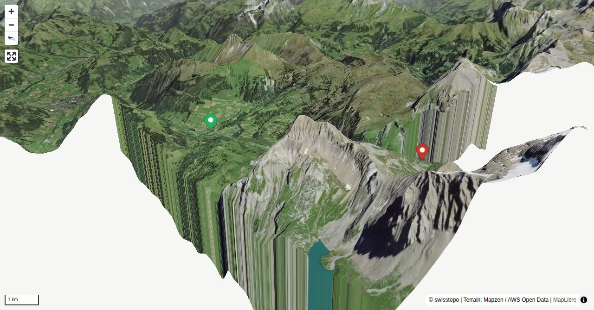

The normal approach to the Geltenhütte always follows the water - in order to savour the journey, a start at the tranquil Lauenen is always worthwhile. From there, you must first pass the "Rohr"; damp flower filled meadows, then cross the floodplain and young forest of the Louwibach. After short steeper section you will reach the Lauenensee - chance for a bath and a bite to eat. After that, the well built mountain path always traces the water's edge, until it surprisingly evades the impressive "Gälteschutz" waterfall. Now it is not far to the Geltenhütte, where further water wonders are to be discovered.
During the winter season from mid-October to the end of May, this is the last stop. The other stations in the valley are not served.
Quick Facts
| Summit elevation | 2002 m |
|---|---|
| Difficulty | SAC T2 Mountain hiking on marked trails with uneven terrain and some sustained ascent. Guide |
| Trailhead | Lauenen, Geltenhorn |
| Distance | 8.3 km (out-and-back) |
| Total ascent | ~771 m |
| Elevation range | 1236-2002 m |
| Route sources | SAC Route Portal |
Photos


Route Map & Elevation
i
i
sac_scale (precise T1–T6) with
swissTLM3D Wanderwegart
fallback where OSM is silent (coarser T2/T3 and T4+ buckets).
Coverage: OSM 0.7% · swisstopo 92.6% · unknown 5.9%.Elevations computed from the inlined GPX track (SwissTopo height API).
Loading forecast…
3D Terrain View

Route Details
From Lauenen (Louwenesee - Geltenschuss)
- In summer, a bus service runs up to Louwensee. This shortens the approach time by about 1½ hours.
Source: SAC Route Portal
Getting There & Back
Start: Lauenen, Geltenhorn (1241 m)
Directions from to Lauenen, Geltenhorn
Route returns to Lauenen, Geltenhorn.
Field Reference
| Trailhead | Lauenen, Geltenhorn | 46.42450, 7.32190 |
|---|---|---|
| Summit | Geltenhuette Sac (2002 m) | 46.36957, 7.33909 |
Coordinates are WGS84 decimal degrees (lat, lon). Emergency: 112 (general) or 1414 (Rega air rescue). Page URL: